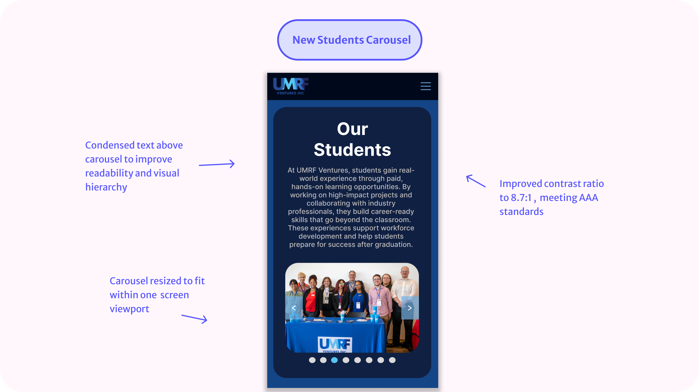
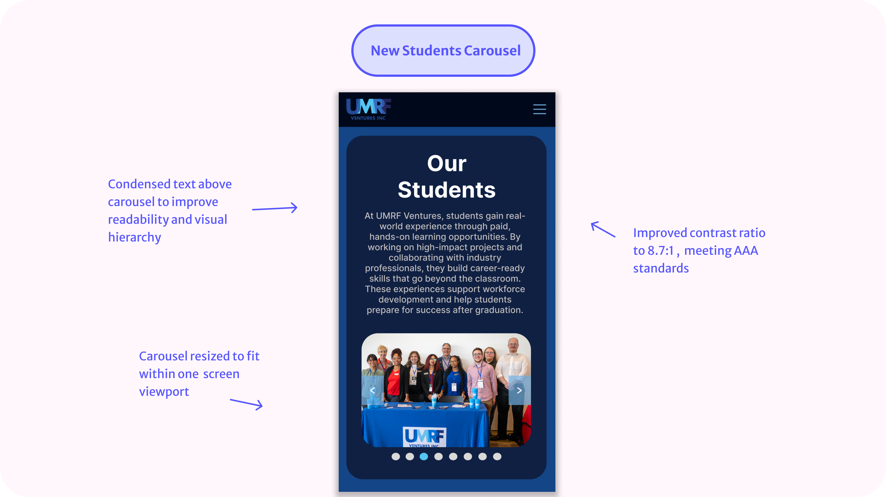
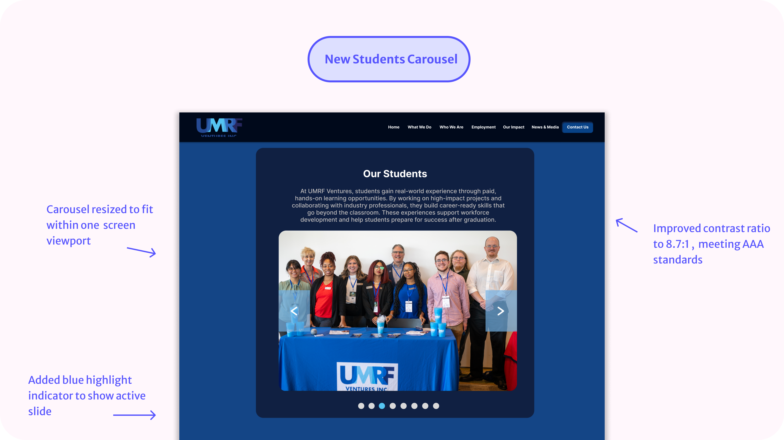
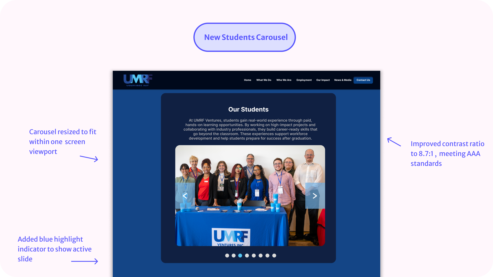

UMRF Ventures, Inc. needed a refreshed website that clearly communicated their mission and services to prospective clients and student employees. I am responsible for creating mobile-first mockups that aligned with their brand and translated smoothly across screen sizes. I also update and optimize the site’s content to boost the site’s SEO and web visibility.
Front-End Developer, UX/UI Designer
Figma, Github, XXAMP, Visual Studio Code
March 2025-Present
While reviewing key pages, I identified that the site lacked consistency in mobile responsiveness and accessibility standards. Some elements extended beyond the viewport, color contrast didn't meet accessibility guidelines, and the visual hierarchy made it hard to scan on smaller screens, which impacts usability, visibility and SEO.
I was assigned to improve the "Our Impact" page as part of UMRF Ventures' broader initiative to modernize their website. While the page layout was structurally sound, I noticed key usability issues across both desktop and mobile, such as low text color contrast that didn't meet WCAG standards, poor visual hierarchy, and oversized components that pushed important content below the fold. These design flaws impacted the overall accessibility, responsiveness, and visibility of the site, potentially hurting SEO performance.
I worked with the marketing specialist and a fellow web developer to find ways to improve the user experience while staying within our brand guidelines. We agreed to scale down the "Students" and "Our Community" sections so they could fit within a single screen view, making the content easier to scan. We also added alt text to all images to improve accessibility and help boost our SEO rankings.
The first element I focused on was the Students carousel. In the original design, it extended off-screen on both web and mobile, making it frustrating to interact with. On smaller screens, the large text overshadowed the images, reducing visual clarity and hierarchy.
 

 

While the overall size of the stats cards worked well on mobile, the icons inside them were small and misaligned. I resized and centered the icons to improve visual balance. I also adjusted the breakpoints for tablet and desktop views to prevent card overlap at mid-sized screen widths.
Some text and link colors didn't meet WCAG AA contrast guidelines. I increased color contrast, bringing the ratio from 4.62:1 to 8.7:1 — which now meets AAA standards — and added a gradient to the statistics to give them more visual weight.
Last but not least, I turned my attention to the "Our Community" carousel. Initially, I assumed the same solution I used for the Students' carousel—resizing and simplifying—would work here too.
This carousel included links and titles, so its spacing needs were different from the Students' carousel.
I applied the original carousel fix, but it didn't translate well due to the extra interactive elements. After exploring examples from other websites and design systems, I proposed a new approach: a hero-style carousel. It balances visual appeal with mobile usability while maintaining content hierarchy.